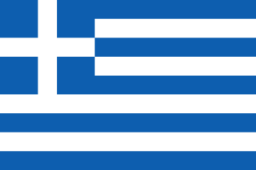
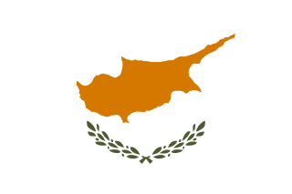
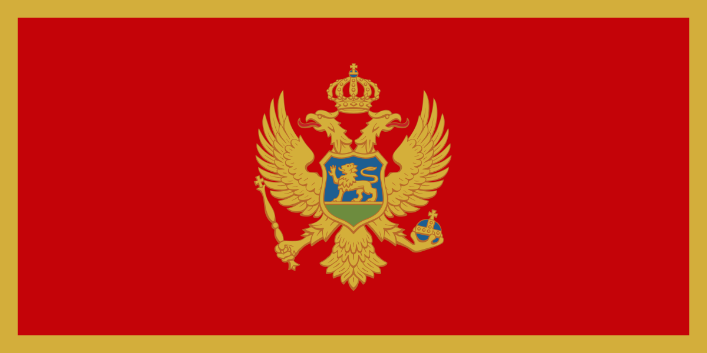

Prima dell'Euro
| PAESE | VALUTA |
|---|---|
 Austria Austria |
Scellino austriaco |
 Belgio Belgio |
Franco belga |
 Paesi bassi Paesi bassi |
Fiorino olandese |
 Finlandia Finlandia |
Marco finlandese |
 Francia Francia |
Franco francese |
 Germania Germania |
Marco tedesco |
 Irlanda Irlanda |
Sterlina irlandese |
 Italia Italia |
Lira italiana |
 Lussemburgo Lussemburgo |
Franco lussemburghese |
 Portogallo Portogallo |
Scudo portoghese |
 Spagna Spagna |
Peseta spagnola |
|  Grecia | Dracma greca |
La strada verso l'Euro
Stabilità economica
La stabilità monetaria internazionale dell'immediato dopoguerra non durò a lungo: i disordini dei mercati valutari internazionali minacciarono il regime di prezzi comuni instaurato nell'ambito della politica agricola comune, uno dei principali pilastri dell'allora Comunità economica europea.
Successivi tentativi di conseguire una stabilità dei tassi di cambio furono scoraggiati dalle crisi del petrolio e da altri shock, fino a quando, nel 1979, venne avviato il Sistema monetario europeo (SME).
Lo SME si basava su un sistema di tassi di cambio usato per mantenere le oscillazioni delle valute partecipanti entro un intervallo ristretto.
Questo approccio completamente nuovo rappresentò una forma di coordinamento delle politiche monetarie tra i paesi dell’UE senza precedenti e funzionò bene per oltre un decennio. Fu però sotto la presidenza di Jacques Delors che i governatori delle banche centrali dei paesi dell’UE redassero la "relazione Delors" sulle modalità per conseguire l'UEM.

Jacques Delors
Jacques Lucien Jean Delors è un politico ed economista francese. Noto europeista, è stato ministro e presidente della Commissione europea. Delors presiedette la Commissione europea dal gennaio 1985 al gennaio 1995, svolgendo tre mandati consecutivi.
Da Maastricht all'euro e all'area dell'Euro, 1991-2002

Firma del trattato di Maastricht (7/2/1992)
La relazione Delors proponeva un periodo preparatorio suddiviso in tre fasi, compreso tra il 1990 e il 1999, per giungere a un’unione economica e monetaria e all’area dell’euro.
I leader europei accettarono le raccomandazioni contenute nella relazione Delors. Il nuovo trattato sull'Unione europea, che conteneva le disposizioni necessarie per la creazione dell'Unione monetaria, fu approvato durante il Consiglio europeo di Maastricht, nei Paesi Bassi, nel dicembre 1991. Dopo un decennio di preparativi l'euro venne introdotto il 1° gennaio 1999: durante i primi tre anni fu "invisibile", in quanto utilizzato solo a fini contabili e per i pagamenti elettronici.
Le monete e le banconote entrarono in circolazione il 1° gennaio 2002 e in 12 paesi dell'UE si assistette al passaggio a una nuova valuta più rilevante della storia. Le fasi di transizione dalle monete locali all'euro vennero stabilite dalle disposizioni del Trattato di Maastricht del 1992 relative alla creazione dell'Unione economica e monetaria.
La nascita ufficiale della moneta unica europea avvenne il 1º gennaio 1999, con un comunicato del Consiglio dei Ministri europei.
Il debutto dell'euro sui mercati finanziari risale al 1999, mentre la circolazione monetaria ebbe effettivamente inizio il 1º gennaio 2002 nei dodici Paesi dell'Unione che per primi hanno adottato la nuova valuta. In Italia l'euro venne sperimentato per la prima volta nei comuni di Fiesole e Pontassieve per sei mesi a partire dal 1º ottobre 1999.
Dopo il 2002, altri Stati hanno soddisfatto i requisiti per adottare l’euro:
| PAESE | VALUTA PRECEDENTE | ANNO DI ADOTTAMENTO |
|---|---|---|
 Slovenia Slovenia |
Tallero sloveno | 1º gennaio 2007 |
|  Cipro | Sterlina cipriota | 1º gennaio 2007 |
 Malta Malta |
Lira maltese | 1º gennaio 2007 |
 Slovacchia Slovacchia |
Corona slovacca | 1º gennaio 2009 |
 Estonia Estonia |
Corona estone | 1º gennaio 2011 |
| Lettonia | Lats lettone | 1º gennaio 2014 |
 Lituania Lituania |
Litas lituano | 1º gennaio 2015 |
Chi non ha adottato l'Euro
Di seguito i paese membri che non intendono adottare l'euro
| PAESE | INGRESSO NELLA UE | MONETA CORRENTE |
|---|---|---|
 Danimarca Danimarca |
1º gennaio 1973 | Corona danese |
| PAESE | INGRESSO NELLA UE | MONETA CORRENTE |
|---|---|---|
 Svezia Svezia |
1º gennaio 1995 | Corona svedese |
 Rep. Ceca Rep. Ceca |
1º maggio 2004 | Corona ceca |
 Ungheria Ungheria |
1º maggio 2004 | Fiorino ungherese |
 Polonia Polonia |
1º maggio 2004 | Złoty polacco |
 Bulgaria Bulgaria |
1º gennaio 2007 | Lev bulgaro |
 Romania Romania |
1º gennaio 2007 | Leu rumeno |
 Croazia Croazia |
1º luglio 2013 | Kuna croata |
L'opting out è una clausola di esenzione ovvero uno strumento atto a garantire che quando un paese non vuole associarsi agli altri con riguardo a un particolare settore della politica dell’Unione, può non partecipare, evitando una situazione di stallo generale.
Stati fuori dall'Unione Europea che hanno adottato l'euro
| PAESI | MODALITA' DI ADOZIONE |
|---|---|
 Città del Vaticano Città del Vaticano |
Accordo con l'UE tramite l'Italia |
 San Marino San Marino |
Accordo con l'UE tramite l'Italia |
 Principato di Monaco Principato di Monaco |
Accordo con l'UE tramite la Francia |
 Andorra Andorra |
Accordo con l'UE |
|  Montenegro | Adozione unilaterale |
 Kosovo* Kosovo* |
Adozione unilaterale |
*In Kosovo la minoranza serba utilizza il Dinaro serbo
Perché una moneta comune?
I vantaggi
Fin dalla fine degli anni Sessanta l'Unione economica e monetaria (UEM) era stata un'ambizione ricorrente dell'Unione europea. L'UEM comporta il coordinamento delle politiche economiche e finanziarie, una politica monetaria comune e una moneta unica, l'euro, che offre diversi vantaggi:- Scambi transfrontalieri più veloci;
- L’economia ottiene risultati migliori
- Scelta più ampia e maggiori opportunità per i consumatori
Gli effetti della moneta unica
Gli effetti
L'effetto principale dell'introduzione della moneta unica è l'eliminazione dei rischi e costi di cambio; viene inoltre incrementata l'interdipendenza economica e una facilitazione del commercio tra stati membri. Questo avrebbe dovuto portare benefici a tutti i cittadini dell'eurozona, in quanto l'incremento dei commerci è storicamente una delle forze guida della crescita economica.
Nei fatti il risultato è stato opposto, poiché si è registrata una riduzione ed un accentramento delle attività commerciali e finanziarie. Inoltre, la moneta unica si inserisce nel piano a lungo termine di un mercato unico all’interno dell’Unione.
Un secondo effetto è una riduzione nelle fluttuazioni dei prezzi, ovvero un maggior contenimento dell'inflazione a vantaggio dei grandi detentori di capitali. In alcuni Stati (tra cui l'Italia, Francia, Paesi Bassi, Germania, Austria, Grecia) hanno preso piede movimenti politici cosiddetti Euroscettici che chiedono o una revisione dei Trattati internazionali oppure un ritorno alla valuta nazionale con svalutazione della moneta per rendere competitivi, col tasso di cambio, i prodotti per l'esportazione. Se da un lato questo potrebbe, in teoria, facilitare l'esportazione, per via del nuovo tasso di cambio, dall'altro lato (secondo alcune teorie) gli effetti dell'inflazione annullerebbero questa competitività.